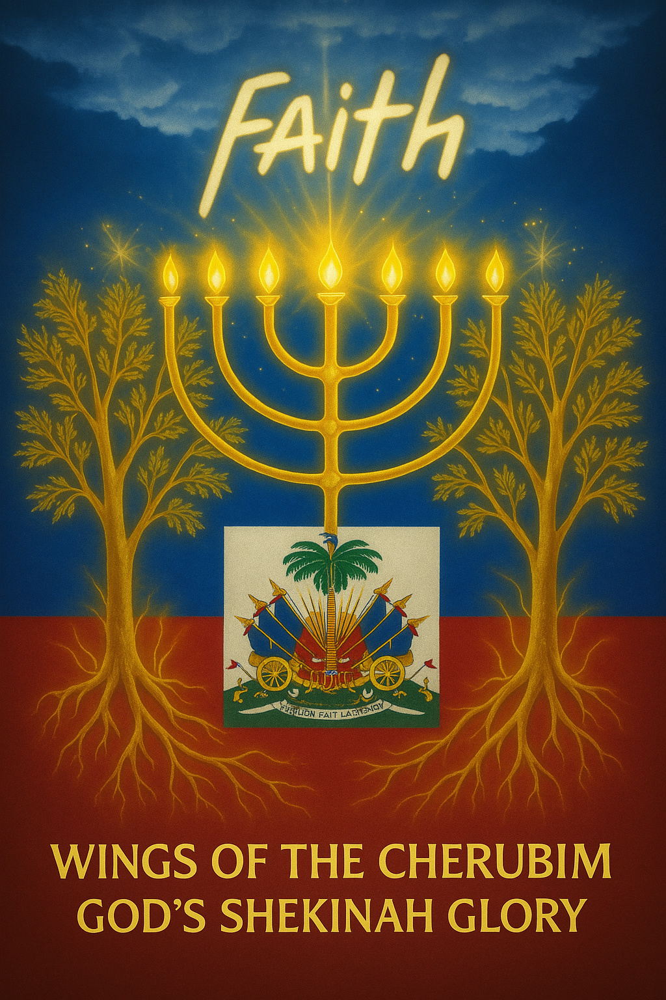

Introduction: Vision and Revelation
Haiti, a small yet powerful nation, is often symbolized through its flag. This flag contains significant spiritual meaning, deeply rooted in biblical prophecy and divine connection. In this section, we explore the connection of Haiti's flag to the Bible and how its elements align with spiritual concepts of God's plan for humanity.
Zechariah 4:5–6 describes a spiritual revelation given to Zerubbabel. The angel shows him five material things and explains their symbolic meaning, presented as a declaration for the nation of Haiti.
The angel reveals a spiritual banner sealed above the Haitian flag, symbolizing the Word of God for Haiti. The four-square insets in the flag are explained as spiritual emblems.
Zechariah 4:6 — "Not by power nor by might, but by my Spirit, says the Lord of Hosts."
Each portion of the flag is interpreted, including references to Zerubbabel (a type of Jesus) and the mountain becoming a plain (v.7), indicating God's mercy and divine help.
Section II: God's Judgment Declaration and Foundation
A spiritual confrontation occurs as God judges Satan using the plummet of His righteousness—symbolized by the seven spirits/eyes of the Lord. These correspond to the golden triangles on the Haitian flag. God lays the foundation of Haiti, and the nation's destiny is sealed by His will.
Psalm 62:1–4 — God stands as a defense, judging Satan and establishing righteousness.
Section II: Judgment Declaration
A spiritual confrontation occurs as God judges Satan using the plummet of His righteousness—symbolized by the seven spirits/eyes of the Lord. These correspond to the golden triangles on the Haitian flag. God lays the foundation of Haiti, and the nation's destiny is sealed by His will.
Biblical Connections: The Olive Trees and the Candlestick
The Haitian Flag in the Bible — Zechariah & Revelation
The line-by-line wording of Zechariah chapter 4 connecting to Revelation chapter 11, verses 3–5, is unveiled. These words are brought to life as they are married into the four-square inset of today's Haitian flag. The tapestry of light is revealed. The Kingdom of God coming to the earth is visually seen, along with the fiery judgment throne of God. The colors of purple and scarlet, the meeting of God and man, have birthed the millennial Kingdom of God on earth.
Zechariah 4 (selected verses)
"And the angel who talked with me came back and wakened me, as a man is wakened out of his sleep." ...
"I have looked, and behold a candlestick all of gold, with a bowl upon the top of it, and his seven lamps thereon."
"And two olive trees by it, one on the right side of the bowl and the other on its left side."
Revelation 11 (selected)
"Then I will give power to my two witnesses ... These are the two olive trees and the two candlesticks standing before the Lord of the earth."
These links are interpreted as prophetic symbolism pointing to divine witnesses, the outpouring of God's word, and the meeting of heaven and earth.
Color Symbolism in the Haitian Flag
The Haitian flag features a rich color scheme that includes light blue (heaven), scarlet (earth), and gold (heavenly glory). These colors are connected to the meeting of God and man. Light blue, as seen in the biblical connection, represents the sky or heaven, while scarlet is tied to Adam, Edom, and Esau. The combination of these colors creates a purple hue, symbolizing the union of divine and human elements.
John 19:2 — "They put on him a purple robe."
Spiritual Meaning and Salvation
The Haitian flag, through its colors and symbols, reflects God's covenant with humanity. The golden pipes, the two anointed ones, and the fire they bring are symbols of divine prophecy and power, as seen in Revelation 11. The curse on the earth is removed, and the divine authority over all nations is established. The flag represents the spiritual journey of salvation and the meeting of God and man.
Revelation 11:3 — "I will give power to my two witnesses..."
Transformation & Time Shift
The olive trees become branches, forming wheel-within-wheel visions (linked to Ezekiel 1). The Haitian flag’s inset carries prophetic symbols—golden cannons, palm tree, double-edged axes—interpreted as God's throne and judgment imagery.
Creation, Sound, and the Word
From God’s love came vibration, sound, and the word—leading to creation. Psalm 148 and 29 reflect this. Jesus, God's visible image, spoke, and creation responded. Hebrews 4:12 captures the divine power that divides soul and spirit through the word.
CREATION (Genesis 1:3)
"Let there be light" — sound and word bring creation into being; Elohim (plural form) and the threefold fullness of God are referenced in scripture.
THE CURSE
THE CURSE — Outline
God created all things good. The fall brought a curse. Only God can remove the curse — the life is in the blood. The resurrection power of Jesus removes the curse for those who repent and believe.
Intercessory Prayer
Intercessory Prayer
Psalm 42/43 reveal the soul/spirit battle and the power of deep intercession. True repentance and Holy Spirit-led intercession are needed to break strongholds and bring restoration.
Key Time Scriptures
Key Time Scriptures
A small table of scriptural pairings and how they relate to the themes discussed is provided in the original manuscript (Psalm 139, Genesis 3, Ecclesiastes, Romans, etc.).
Authored by Gregory Shadt
A vessel raised by God for Haiti’s spiritual restoration.